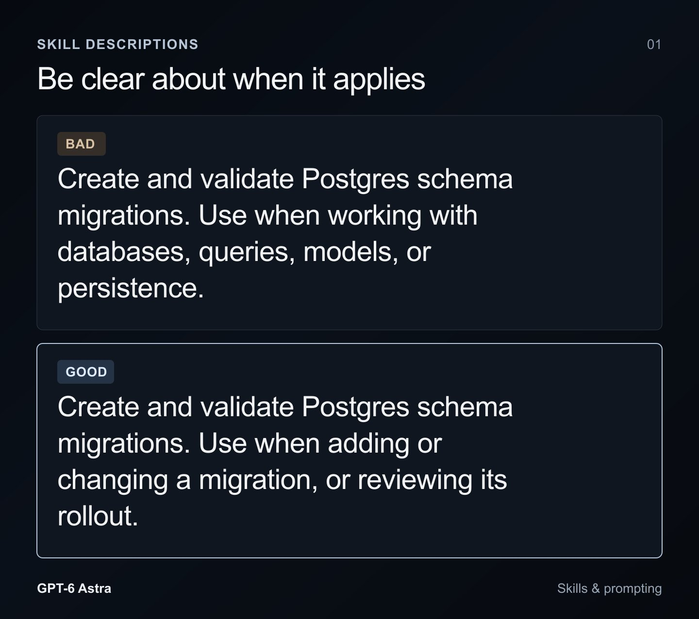
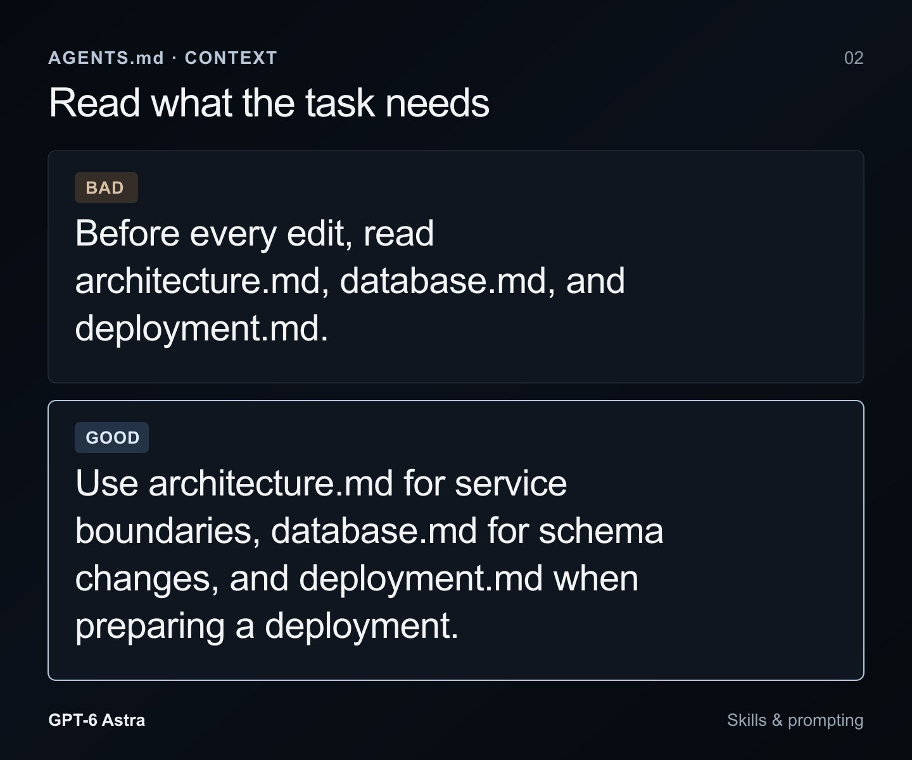

Rethinking skills and prompts for GPT-6 Astra
重新思考 GPT-6 Astra 的 Skills 与提示
先看这五句 / Highlights
译者补充，不是原文。
- 编码智能体进步很快；过去一年堆起来的 Skills、
AGENTS.md和任务提示，对 GPT-6 Astra 来说往往是多余脚手架，该减负了。 - Skill 描述要尽量短、只说清何时启用；装太多 skill 会让 Codex 截断描述，还容易互相抢戏（「pick me」）。
- 有用的 skill 靠 progressive disclosure：根文档当最小路由器，按需指向配套文档和脚本，别一次塞满上下文。
AGENTS.md别要求每次改动前读全仓库；旧模型那套「多跑测」指令会变噪音；边界要按 Astra 更好的判断力重写，并在开工前写清完成态——Astra 更 tentative，容易早停。- 文末有译者三方对照：本篇 vs Fable 5.1 提示文档 vs Claude 5 上下文工程——仓库脚手架、API/harness、以及 Claude 侧「规则变判断 / 渐进披露」。
开篇
编码智能体已经走了很长一段路，最佳实践也变得很快。以前需要大量手把手引导和脚手架的事，现在往往不再需要。
如果你过去一年一直在项目里用智能体，很可能已经堆出了一大堆臃肿指令——为了把模型往好结果上推。每次发版都值得回头审视这些假设；而到了 GPT-6 Astra，这件事比以往任何时候都更重要。
这些指令可以有很多形态：Skills、AGENTS.md，以及你的任务提示，都会塑造模型如何把活干完。
Skill 文件
指令的一种形态，是 skill 文件：本质上是存成 markdown 的提示，有时还会附带脚本。它们通常最适合给模型只在某些任务上才需要的工作流指导，或插件使用说明。
很多人默认往项目里下载一堆 skill，但这是错的。每个 skill 都有名称和描述，会加载进模型的上下文，好让它知道何时使用。许多描述太长；skill 一多，Codex 就会开始缩短描述以塞进上下文。模型看到的每个描述变少，更难判断该选哪个 skill。
更糟的是，描述之间可能互相矛盾，或带着过强的「选我 / pick me」气场，导致模型加载了其实帮不上当前任务的指令。
如果你曾让 Codex 创建 skill，它多半用过 $skill-creator skill。我们最近更新了它的指导，从几个方向缓解实践中常见的失败模式。
第一，skill 描述应尽可能短，同时仍能说清模型何时该用它。
查看原文英文图

这里，坏的 skill 描述会把模型推向：只要碰到任何和数据库相关的事就用它；而好的描述只在真要处理迁移时才触发。
第二，有用 skill 的一个关键标记是 progressive disclosure（渐进披露）。读一个 skill 会占用上下文，让你更接近压缩（compaction），还会引入此刻未必适用的指导。对含多种工作流的 skill，把根文档做成最小路由器，指向配套文档和脚本。给模型足够线索，让它知道该往哪看，而不是强迫它读当下无关的内容。
第三，许多 skill 被写成详尽行程表或菜谱。模型现在更擅长理解细微差别和模糊性，于是过细的指导反而可能拖后腿——以前它们曾帮过忙。
仓库级 skill 也会引导其他贡献者的智能体，而对方可能用不同模型。对 Sol 或 Luna 有帮助的指导，可能过度约束 GPT-6 Astra，所以要想清楚：你留下的指令，会被哪些模型用到。
AGENTS.md
因为 AGENTS.md 会在模型于你的仓库工作时一律生效，请逐条回头看：这项任务是否仍需要这条指令。
要求在每次编辑前先读一摞文档或完整仓库地图，对修 typo 来说太过分。GPT-6 Astra 能自己想清楚该读什么，不必被推着在每次改动前把整个项目翻一遍。
AGENTS.md 上下文引导对比。不好的例子要求每次编辑前都读 architecture / database / deployment；更好的例子按任务类型指向对应文档，避免无谓烧上下文、拖慢工作。查看原文英文图

逼模型在每次编辑前读文件，是烧掉上下文、拖慢工作的好办法。指向一些文档仍然有用，只要它是按情境来的。也别忘了把文档本身保持更新！
以前的模型需要鼓励才会跑测试、检查自己的工作。GPT-6 Astra 自己就会做，所以同一套指令反而可能导致不必要的测试。
GPT-6 Astra 很彻底，但在「任务该推到多远」上可能更犹豫。有时它需要一点推力才能继续。你可以用 AGENTS.md 给某个你知道安全的工作流开许可，例如本地测试套件：
本地测试使用一次性 fixture，没有生产访问权限。请运行它们，修复由本次请求变更引起的失败，并重跑受影响的测试，无需在每一步再征求批准。
原文英文（便于直接粘贴到 AGENTS.md）：
The local tests use disposable fixtures and have no production access. Run them, fix failures caused by the requested change, and rerun affected tests without asking for approval at each step.决策边界
请特别留意你如何描述边界。如果以前的模型未经许可就替你做事，你可能加过很强硬的措辞，逼它先问。这仍然有用，但 GPT-6 Astra 的判断力好得多，你也该按这个标准对待它。它会认真对待你的边界，并可能在你其实乐意它继续的地方停下来。
坚持做完
如果你习惯 GPT-5.6 Sol 接到请求后能连续干很久，GPT-6 Astra 在「何时该停」上会显得更犹豫。它可能做到第一版实现就回来等你审，而后面其实还有活要干。
这时，开工前定义完成态会有帮助。如果任务包含把实现跑起来、检查结果、修失败项，就把这些写进请求。要求「第一版实现后必须停下来等审」会把模型往更早的停点拉，所以先确认那是不是你真正需要的决策。
如果你希望它在第一遍之后继续探索，说清楚你想探索什么、以及该停在哪里。
换新模型是打扫房子的好时机。让 GPT-6 Astra 按本文讨论的内容做一次审计，然后去建你以前不敢尝试的东西！
三方对照：Astra · Fable 5.1 · Claude 5 上下文工程
译者补充，不是原文。
站内相关笔记：
- Prompting Claude Fable 5.1 — Anthropic 官方提示工程 / API 症状索引
- The new rules of context engineering for Claude 5 models — Thariq（@trq212）谈 Claude 5 的上下文工程新规则
三篇都谈「怎么让编码智能体更好用」，但层不同：一个审仓库脚手架（Codex / Astra），一个调 Claude API/harness（Fable），一个讲 Claude 侧上下文怎么从「规则堆」换成「判断 + 渐进披露」。下面按六块对照。
1. 体裁与受众
- 本篇（pvncher）：Codex DX 实践短文，面向仓库里已经堆起来的 Skills、
AGENTS.md和任务提示——读者是在项目里「打扫脚手架」的人。 - Fable 5.1：Anthropic 官方 API / harness 症状索引长文档——读者是按「看到的行为」对号入座改系统提示、工具循环与历史拼接的人。
- Claude 5 上下文工程：X 长文阅读笔记，面向 Claude Code / 自建 harness 的上下文设计——系统提示、Skills、
CLAUDE.md、memory 怎么拼，而不是单次 prompt 怎么写。
2. 主旋钮不同
- Astra 文：减负。短 skill 描述、progressive disclosure、少脚手架、别每次全读仓库、别把旧测例指令留成噪音。
- Fable 文：API 行为旋钮。
effort档位扫描、thinking.display进度更新、append-only 对话历史、同回合批量独立工具调用、回合级 system（clear_at）等。 - Claude 5 上下文工程：把旧「最佳实践」翻成新默认——规则 → 判断；例子 → 接口；一次性堆齐 → 渐进披露；重复叮嘱 → 写进工具描述；手写记忆 → 自动记忆；简单 spec → 富引用。内部甚至删掉 80%+ Claude Code 系统提示仍无明显编码评测损失。
3. 重叠主题（措辞与模型假设不同）
- 渐进披露 / progressive disclosure：本篇与 Claude 5 文高度同频——skill / 验证 / review 别一次塞满窗口，根文档当路由器，需要时再展开。Fable 文较少谈仓库文件结构，更多谈回合内工具与历史。
- 别在工作做完前收工 / persistence：Astra 更 tentative，容易第一版就回来等审，需要你写清完成态；Fable 5.1 有时会停下来问许可、或只做计划，文档教你显式要求做完。Claude 5 文侧重点不同：少用强护栏逼停，多给判断力。
- 边界 / 许可：Astra 文提醒——强硬的「先问」边界可能让好判断力的模型过早停；Fable 文在「任务已授权仍再问」时给 persistence 补丁；Claude 5 文则说冲突指令（如「适当留文档」vs「不要加注释」）会逼模型多想一轮，该清打架而不是再叠规则。
- 别多做 / 别过约束：Fable 有专章限制未经请求的修复与多余测试；Astra 从反面说旧「多跑测」指令会变噪音；Claude 5 文用「给判断、匹配周围代码习惯」替代「默认不写注释」类硬规则，并用
/doctor给 Skills /CLAUDE.md瘦身。
4. 独有内容
仅本篇（pvncher / Astra）：
- Skill 数量膨胀与描述截断；描述互相矛盾或过强「pick me」。
$skill-creator指导更新：短描述、根文档当路由器、别写过细菜谱。AGENTS.md别要求每次编辑前读全仓库文档；跨模型仓库技能可能过约束 Astra（Sol / Luna 适用 ≠ Astra 适用）。
仅 Fable 5.1：
effort全档扫描；面向用户的进度thinking.display；turn-scoped system。- 安全分类器
refusal；压缩摘要必须保留的约束/决策；优先针对性编辑、避免整文件重写。 - 视觉任务的 crop / zoom 工具；主智能体在子智能体运行时继续干活等并行编排。
仅 Claude 5 上下文工程：
- 明确区分 prompt vs context engineering：跨请求复用的那一层才是重点。
- Then/now 对照表（规则→判断、例子→接口、堆齐→渐进披露等）；冲突指令的成本。
- 落地分层：system prompt 管产品身份、
CLAUDE.md保持轻、Skills 作按需指南、@富引用；瘦身收进claude doctor//doctor。
5. Astra 文 vs Claude 5 文：同题异栈
- 两边都说「模型变强了，旧脚手架在帮倒忙」和「progressive disclosure」——本篇落在 Codex 的 Skills /
AGENTS.md；Claude 5 文落在 Claude Code 的 Skills /CLAUDE.md/ memory / artifacts。 - 本篇更具体到 skill 描述截断、「pick me」、完成态与 tentative 停点；Claude 5 文更系统到上下文分层与「删规则换判断」的原则。
- 读法：清 Codex 仓库脚手架用本篇；清 Claude 侧上下文用 Claude 5 文；两边原则可互相借鉴，文件名与工具不同。
6. 怎么一起用
- 用 Fable 5.1 文档 调 harness / API：effort、历史只追加、工具批处理、进度更新、拒绝与压缩。
- 用 Claude 5 上下文工程 设计 Claude 侧上下文：砍冲突规则、Skills 渐进披露、
CLAUDE.md瘦身、富引用，必要时跑/doctor。 - 用本篇审计 Codex 仓库里的 Skills +
AGENTS.md：砍长描述、拆路由器、按情境指向文档、重写边界与完成态，别把旧模型脚手架原样留给 Astra。
三篇互补，不是互斥。仓库脚手架过重时先读本篇或 Claude 5 文（看你用的是哪一栈）；客户端 / API 行为对不上时先读 Fable。